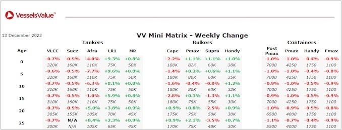

inWeekly Vessel Valuations Report13/12/2022

Bulkers: Values softened across the Bulker sector
Post Panamax BC TW Manila (93,300 DWT, Apr 2012, Jiangsu New Yangzijiang) sold to undisclosed buyers for USD 19.00 mil, VV Value USD 18.33 mil – BWTS fitted.
Panamax Nord Pollux (81,800 DWT, Jan 2016, Tsuneishi Cebu) sold to Unknown European for USD 25.00 mil, VV Value USD 26.26 mil – BWTS fitted
Ultramax DSI Andromeda (60,300 DWT, Feb 2016, Japan Marine United) sold to unknown Japanese buyers for USD 29.85 mil, VV Value USD 26.53 mil – BBCB.
Supramax Jaeger (52,200 DWT, Oct 2004, Tsuneishi Cebu) sold to Middle Eastern buyers for USD 10.50 mil, VV Value USD 11.37 mil – DD Due.
Supramax Rio Choapa (50,600 DWT, Dec 2012, Oshima) sold to unknown Greek buyers for USD 16.40 mil, VV Value USD 17.67 mil – SS/DD Passed.
Handy BC Gant Grace (28,400 DWT, Jan 2010, Imabari) sold to unknown Greek buyers for USD 12.50 mil, VV Value USD 11.89 mil – BWTS fitted
Tankers: Tanker values have firmed over the last week, particularly for older Aframaxes
Suezmax Front Balder (156,000 DWT, Jul 2009, Jiangsu Rongsheng) sold to unknown Turkish buyers for USD 38.50 mil, VV Value USD 37.48 mil – Scrubber fitted.
Aframax Seatrust (114,600 DWT, Jul 2004, Saumsung) sold to undisclosed buyers for USD 35 mil, VV Value USD 33.32 mil – DD Passed.
Aframax Antaios (106,000 DWT, Jan 2006, Hyundai Samho Heavy Ind) sold to undisclosed buyers for USD 33.50 mil, VV Value USD 33.21 mil – BWTS fitted.
MR2 Navigare Pactor (51,000 DWT, Jan 2012, STX Offshore) sold to unknown Turkish buyers for USD 32.00 mil, VV Value USD 30.93 mil – BWTS fitted.
MR2 Centennial Misumi (47,200 DWT, Sep 2008, Onomichi Dockyard) sold to undisclosed buyers for USD 21.50 mil, VV Value USD 21.29 mil – BWTS fitted.
Small Clean (Chem/Prod) Nave Polaris (25,100 DWT, Jan 2011, Dae Sun) sold to undisclosed buyers for USD 14.70 mil, VV Value USD 17.73 mil.
Containers: Container values have softened
No reported sales this week.
